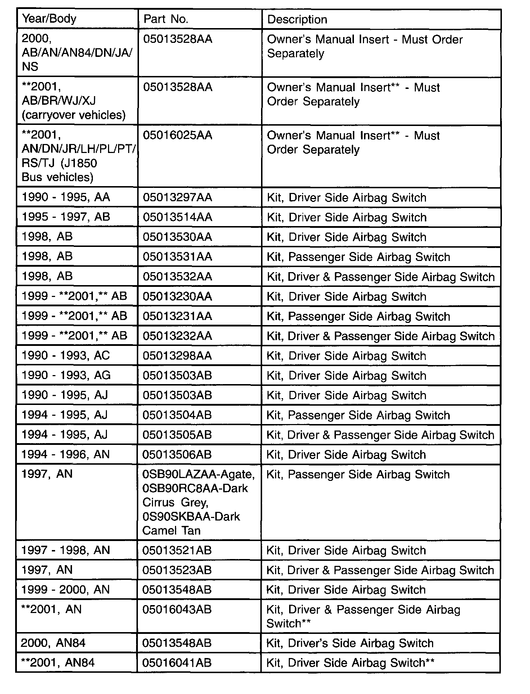
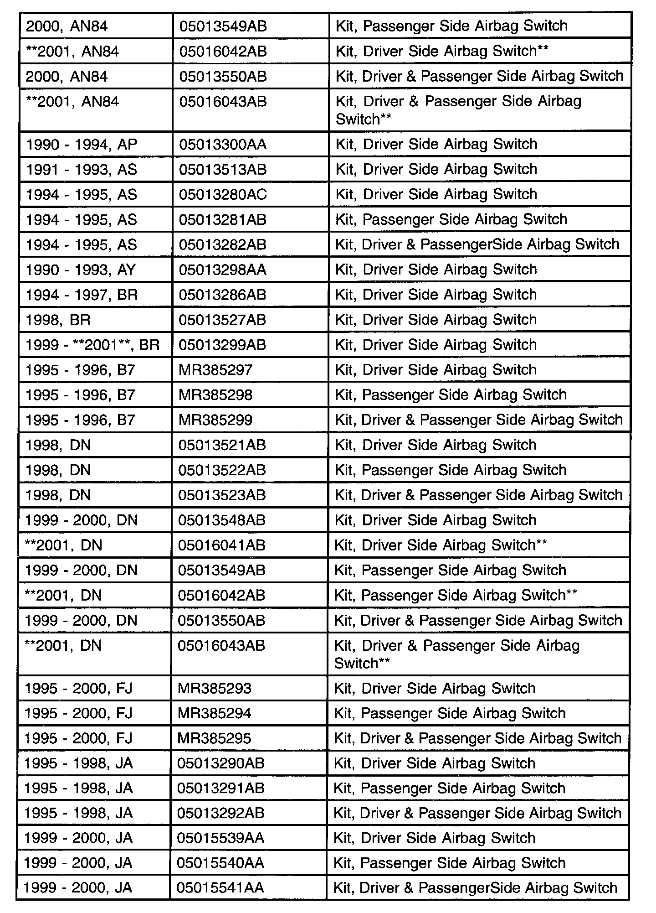
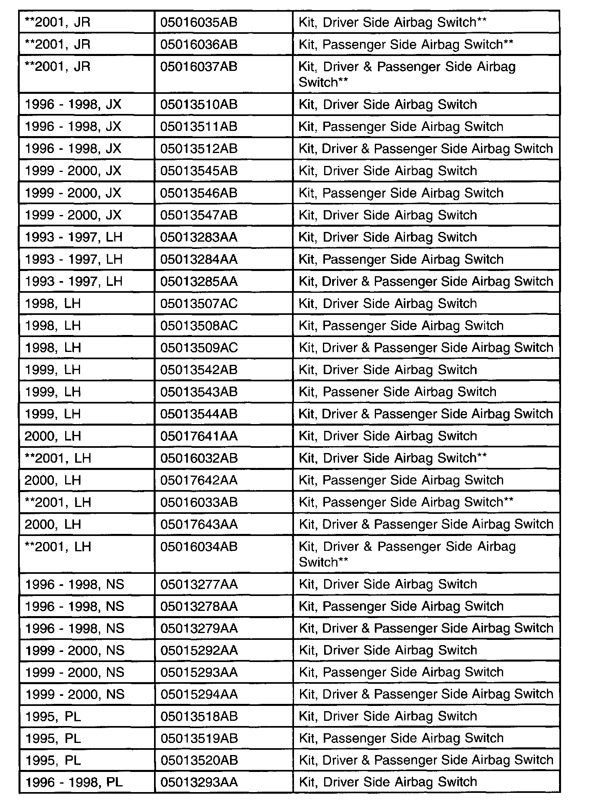
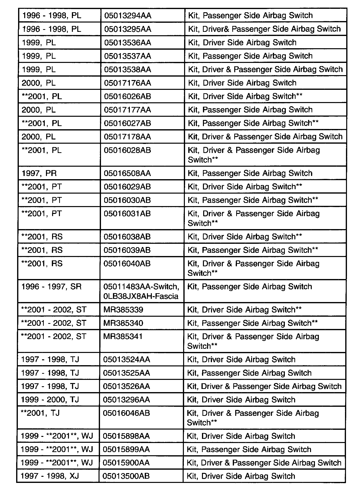
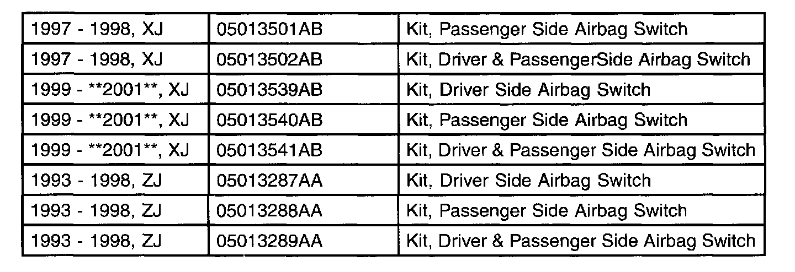

Air Bag - On/Off Switches
NUMBER: 08-025-01GROUP: Electrical
DATE: Nov. 23, 2001
THIS BULLETIN SUPERSEDES TECHNICAL SERVICE BULLETIN 08-037-99, DATED NOVEMBER 12, 1999, WHICH SHOULD BE REMOVED FROM YOUR FILES AND NOTED IN THE 1999 TECHNICAL SERVICE BULLETIN MANUAL (PUBLICATION NO. 81-699-00004). ALL REVISIONS ARE HIGHLIGHTED WITH **ASTERISKS** AND INCLUDE ADDITIONAL MODELS, PARTS, AND 2001 MODEL YEAR PROCEDURES.
NOTE:
THIS BULLETIN DOES NOT APPLY TO DIAMLERCHRYSLER CANADA DEALERS.
SUBJECT:
Airbag On-Off Switches
MODELS:
1990 - 1995 (AA) Spirit/Acclaim/Lebaron Sedan
1995 - **2001** (AB) Ram Van/Wagon
1990 - 1993 (AC) Dynasty/New Yorker/New Yorker Salon
1990 - 1993 (AG) Daytona
1990 - 1995 (AJ) Lebaron Coupe/Convertible
1994 - **2001** (AN) Dakota
1990 - 1994 (AP) Shadow/Shadow Convertible/Sundance
1991 - 1995 (AS) Town & Country/Caravan Voyager
1990 - 1993 (AY) Imperial/New Yorker Fifth Avenue
1994 - **2001** (BR/BE) Ram Pickup
1995 - 1996 (B7) Stealth
1998 - **2001** (DN) Durango
1995 - 2000 (FJ) Avenger/Sebring/Talon
1995 - 2000 (JA) Breeze/Cirrus/Stratus
**2001** (JR) Sebring Sedan/Stratus Sedan/Sebring Convertible
1996 - 2000 (JX) Sebring Convertible
1993 - **2001** (LH) Concorde/Intrepid/Vision/LHS/New Yorker/300M
1996 - 2000 (NS) Town & Country/Caravan/Voyager
1995 - **2001** (PL) Neon
1997 (PR) Prowler
**2001 (PT) PT Cruiser**
**2001** (RS) Town & Country/Caravan/Voyager
1996 - 1997 (SR) Viper
**2001 - 2002 (ST) Sebring Coupe/Stratus Coupe**
1997 - 2001** (TJ) Wrangler
1999 - **2001** (WJ) Grand Cherokee
1997 - **2001** (XJ) Cherokee
1993 - 1998 (ZJ) Grand Cherokee/Grand Wagoneer
NOTE:
THIS BULLETIN IS PROVIDED TO IDENTIFY THE PARTS AND PROCEDURES NECESSARY TO DEACTIVATE AIRBAGS AUTHORIZED BY NHTSA. AIRBAG DEACTIVATION IS A CUSTOMER PAY PROCEDURE, NOT COVERED UNDER THE PROVISIONS OF THE WARRANTY. THE COMPONENT PARTS ARE COVERED UNDER THE APPROPRIATE MOPAR PART WARRANTY.
NOTE:
**SOME 2001 MODEL YEAR PACKAGES (AN/AN84/DN/JR/LH/PL/PT/RS/TJ) REQUIRE OCCUPANT RESTRAINT CONTROLLER (ORC) CONFIGURATION USING THE DRB III(R) AS DETAILED IN EACH VEHICLE SPECIFIC PACKAGE.**
DISCUSSION:
DaimlerChrysler Corporation is now offering airbag on-off switches for the selected vehicles listed above. The switches are packaged in a kit containing all necessary parts (except as indicated) and a detailed instruction sheet. Under the National Highway Traffic Safety Administration's rule, consumers will be authorized for on-off switches by claiming they meet any of several criteria. Airbag on-off switches must not be installed without the vehicle owner presenting the NHTSA authorization letter. For more information concerning the authorization process and/or the authorization letter call NHTSA's Auto Safety Hotline at 1-800-424-9393. We encourage you (dealer) to install these switches when the customer is interested in doing so and has the necessary NHTSA authorization.
NOTE:
FOR SOME 2000 MODEL YEAR APPLICATIONS (AB/AN/AN84/DN/JA/NS) **AND SOME 2001 CARRYOVER APPLICATIONS (AB/BR/WJ/XJ)**, A NEW OWNER'S MANUAL INSERT IS REQUIRED, P/N 05013528AA, AND MUST BE ORDERED IN ADDITION TO THE AIRBAG SWITCH KIT. THE NEW INSERT IS ORANGE, AND MUST BE PRESENTED TO THE CUSTOMER IN PLACE OF THE YELLOW ONE, P/N 05013517AA, THAT WILL COME IN THE AIRBAG KIT.
**FOR SOME 2001 MODEL YEAR APPLICATIONS (WITH J1850 BUS, AN/AN84/DN/JR/LH/PL(PT/RS/TJ) A NEW OWNER'S MANUAL INSERT IS REQUIRED, P/N 05016025AA, AND MUST BE ORDERED IN ADDITION TO THE AIRBAG SWITCH KIT. THE NEW INSERT MUST BE PRESENTED TO THE CUSTOMER AFTER INSTALLATION.**





PARTS REQUIRED:
NOTE:
SOME INSTRUCTION SHEETS FOR THE 1999 MODELS LIST ONLY 1998 MODELS ON THE COVER PAGE. THE 1998 KITS CAN BE USED ON ALL 1999 CARRY-OVER VEHICLES.
DEACTIVATION/DOCUMENTATION PROCEDURE:
1. Before you install any airbag on-off switch for owners of air bag equipped vehicles, the owner must present to you an "Authorization Form" from the U.S. Department of Transportation National Highway Traffic Safety Administration (NHTSA), certifying the specific vehicle by its vehicle identification number. The authorization applies only to the vehicle identified and not to other vehicles that the owner may have~
2. The owner must complete the "Authorization to Install Air Bag On-Off Switch Release Agreement Form" available in the "Forms Folder" under "TSB/Recall" tab of MDS2 and printed on your dealership letterhead. keep a copy for your records and make a copy for the vehicle owner.
3. Complete the NHTSA authorization form, and return it to NHTSA within seven days, making copies for the owner's and your records.
NOTE:
ALL DEALER OWNED USED VEHICLES SHOULD BE INSPECTED FOR PROPER AIRBAG OPERATION, i.e. NOT DEACTIVATED, PRIOR TO RESALE.
POLICY:
Information Only